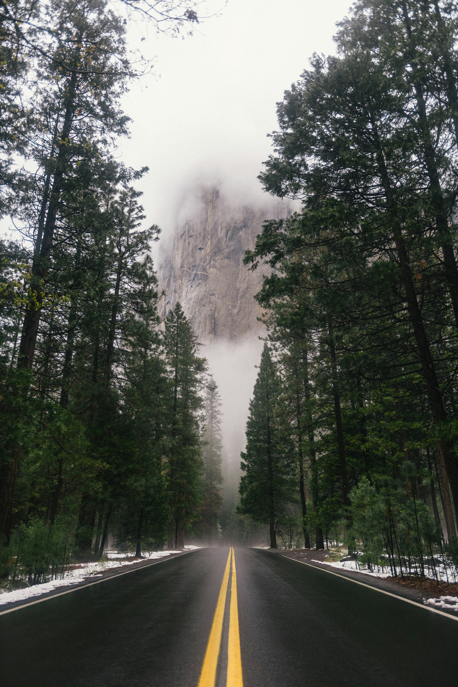

Home Page
What is it about the road industry
----------------------------------------------
In the modern age, we produce things as a means of convinence. One such thing is the development of Cars and, more notably, roads. We developed roughly 4-million-mile road networks. With that development, there is a cost, not the the people who make these roads, but what surrounds it, the enviroment

"What damages do roads cause? I ain't ever seen it do anything wrong" The development of roads was casued by the rise of commercial vehicles being accessible to the public, leading to the development of that 4-million-mile road network, along side alternative road networks such as highways. Cars alone can cause harm to the enviroment, being a large metal box that is moving faster than most people, and has the capability to cause more harm. This isnt acocunting for the Carbon Emmissions that older models can produces.
Road development has a unique property of causing issues post-construction. As the roads get used and torn through through use and the erosion process, that debris is ending up somewhere, typically in water. It can cllog waterways and cause damages to watery habitats, if left unchecked. Of course, the construction itself causes damages that arent normally seen, specifically the soil it stands upon. As construectiuons happens, various metals and oil can end up duining the surrpunding soil, ponetially reaching water through runoff water, such as rain, poluting that body of water.